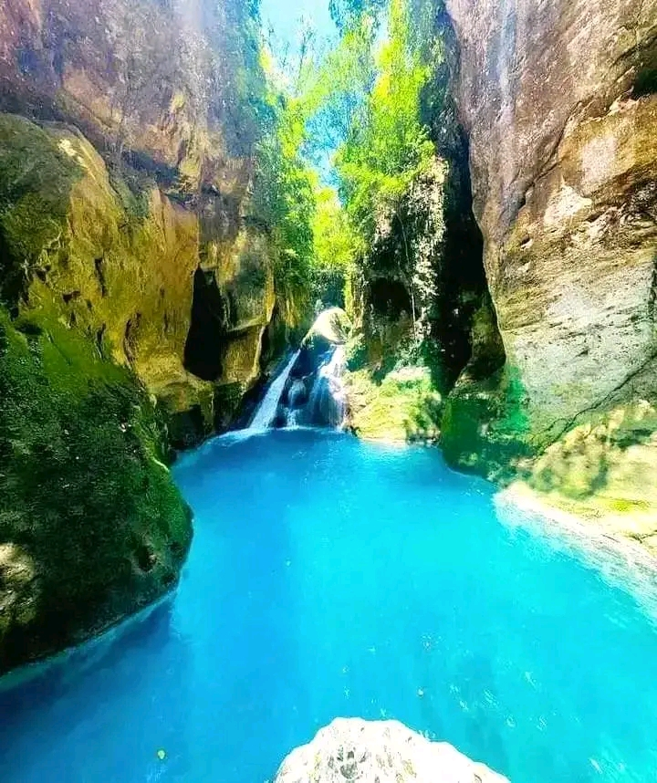
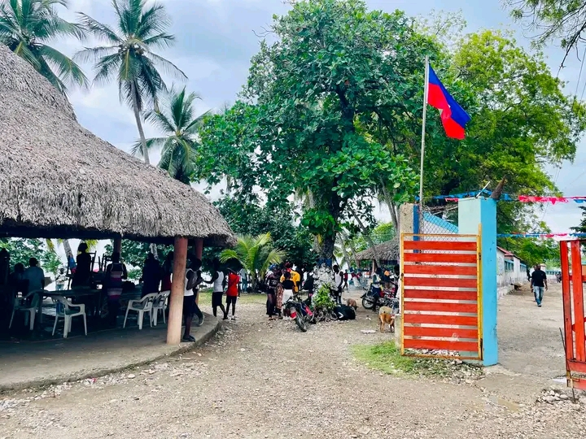
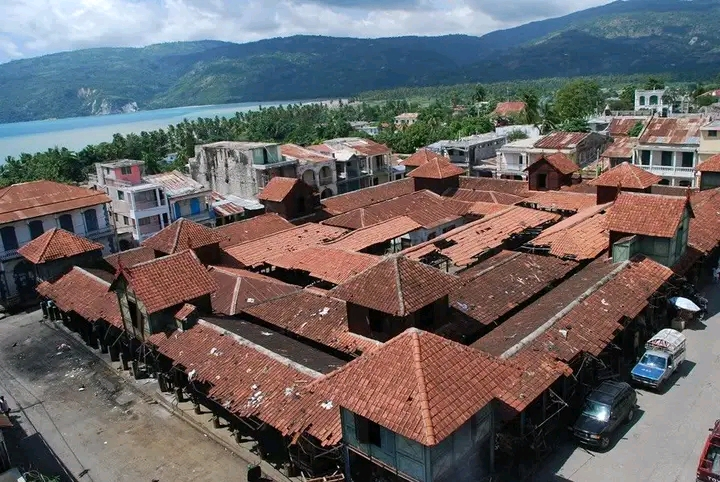
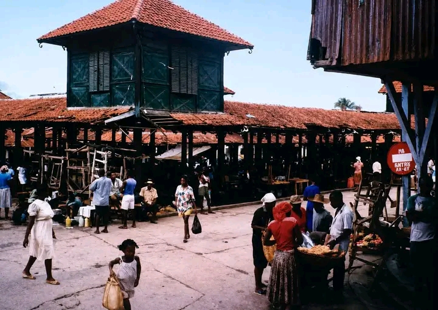
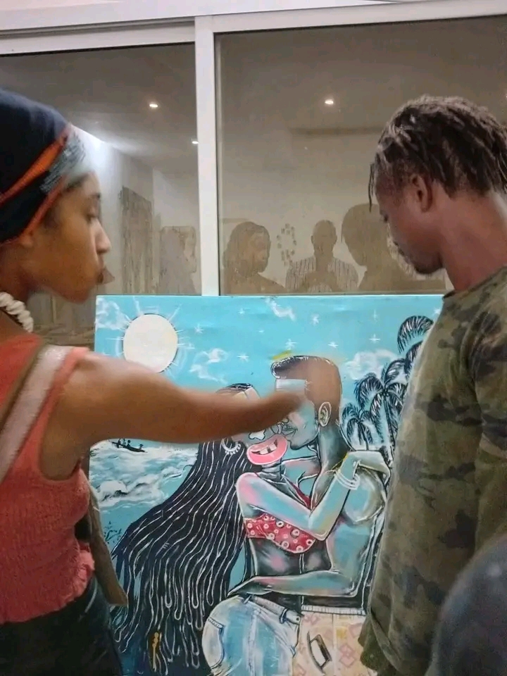
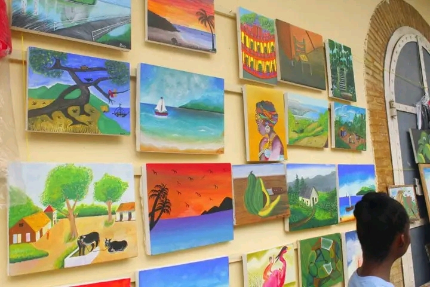
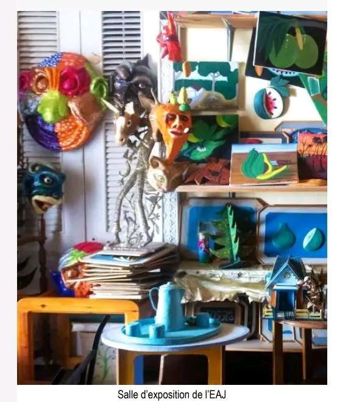
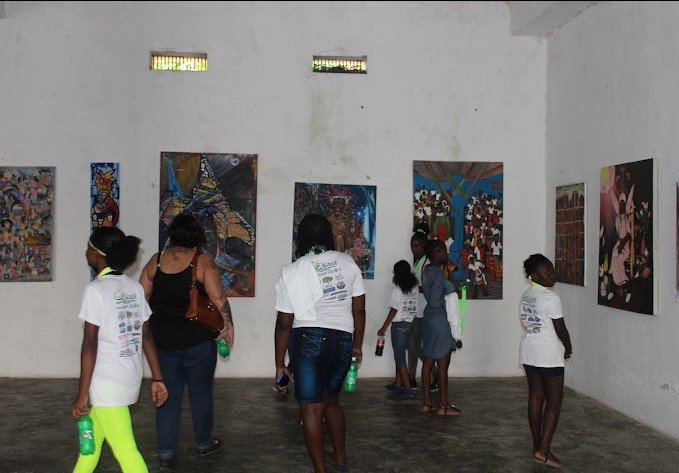

Les Incontournables de Jacmel


Bassin Bleu
Ensemble de bassins naturels et cascades cachés au milieu d'une végétation tropicale luxuriante. Le site de Bassin Bleu est un ensemble de bassins naturels et de cascades niché dans les montagnes verdoyantes au nord de Jacmel, considéré comme l'un des lieux touristiques les plus emblématiques et prisés d'Haïti.Le site se compose de plusieurs bassins naturels aux eaux turquoise profondes, retenues par des formations rocheuses impressionnantes. Les bassins les plus connus sont le Bassin Clair, le Bassin Palmiste et le spectaculaire Bassin Yes.: Enfoncé dans une végétation tropicale luxuriante, l'endroit offre un cadre naturel apaisant, idéal pour la baignade, le saut depuis les rochers et la randonnée en pleine nature. L'accès nécessite un trajet en véhicule ou moto jusqu'au point de départ, suivi d'une marche accompagnée de guides locaux le long de sentiers de montagne.


Plage Raymond-les-Bains
Une magnifique plage populaire de sable blond, idéale pour profiter de la mer et déguster du poisson grillé. Le site de Bassin Bleu est un ensemble de bassins naturels et de cascades niché dans les montagnes verdoyantes au nord de Jacmel, considéré comme l'un des lieux touristiques les plus emblématiques et prisés d'Haïti.Le site se compose de plusieurs bassins naturels aux eaux turquoise profondes, retenues par des formations rocheuses impressionnantes. Les bassins les plus connus sont le Bassin Clair, le Bassin Palmiste et le spectaculaire Bassin Yes.: Enfoncé dans une végétation tropicale luxuriante, l'endroit offre un cadre naturel apaisant, idéal pour la baignade, le saut depuis les rochers et la randonnée en pleine nature. L'accès nécessite un trajet en véhicule ou moto jusqu'au point de départ, suivi d'une marche accompagnée de guides locaux le long de sentiers de montagne.

Cathédrale St-Jacques & St-Philippe
Édifice religieux emblématique à la structure métallique située au cœur du centre historique.Une magnifique plage populaire de sable blond, idéale pour profiter de la mer et déguster du poisson grillé. Cathédrale Saint Jacques et Saint Philippe est l'un des monuments religieux et historiques les plus importants de Jacmel, dominant la place centrale de la ville. Architecture et importance historique Patrimoine religieux et culturel : Édifiée au début du XXe siècle (inaugurée en 1918), elle porte le nom des saints patrons de la ville de Jacmel, célébrés chaque année au mois de mai lors d'une fête patronale très populaire. Style architectural remarquable : L'édifice se distingue par ses structures métalliques caractéristiques de l'époque du fer à Jacmel, apportées de France et assemblées sur place, associées à de belles maçonneries traditionnelles. Emplacement central : Située sur la Rue De L'Église, la cathédrale fait face à la place d'Armes (Place de la Cathédrale) et se trouve au cœur du secteur historique, à proximité des ateliers d'artisans du papier mâché.


Le Marché en Fer de Jacmel
Le Marché en Fer de Jacmel (parfois appelé Marche est l'un des monuments les plus emblématiques de la ville et un élément central de son patrimoine architectural. 1. Histoire et origines Inauguration : Construit à la fin du XIXᵉ siècle (vers 1895), le marché est né durant la période de prospérité économique de Jacmel, liée à l'âge d'or du commerce du café. Origine des matériaux : Tout comme le Marché en Fer de Port-au-Prince, sa structure métallique préfabriquée a été directement importée d'Europe (notamment de France) avant d'être assemblée sur place. 2. Architecture et style Structure en fonte et acier : Le marché illustre le style architectural industriel du XIXᵉ siècle en métal et fer forgé, conçu pour offrir de grands espaces ouverts et protéger le commerce contre les incendies qui ravageaient autrefois les bâtiments en bois. Inspiration coloniale et victoricienne : Ses structures à claire-voie et ses éléments décoratifs en métal ont influencé le style des maisons à colonnades de Jacmel et même l'architecture du Vieux Carré à La Nouvelle-Orléans. 3. Statut et préservation Classé Patrimoine National : En janvier 2011, le Marché en Fer de Jacmel a été officiellement classé patrimoine national par l'État haïtien (via l'ISPAN). Restauration : Endommagé au fil du temps et par le séisme de 2010, le marché a fait l'objet de travaux de réhabilitation et de restauration, notamment soutenus par l'École-Atelier de Jacmel, afin de préserver son authenticité tout en l'adaptant aux besoins des commerçants locaux. 4. Rôle économique et culturel Cœur de la vie quotidienne : C'est un marché public très animé où s'échangent quotidiennement des produits vivriers, des épices, des textiles ainsi que des pièces d'artisanat local. Témoin de la créativité jacmelienne : Situé dans le centre historique, il sert de point de repère tant pour les habitants que pour les visiteurs explorant la ville créative..




Galeries d'art & Ateliers
Ateliers d'artisans réputés pour la confection de masques et figures en papier mâché. Jacmel Arts Center (Sant D'A Jakmel) : Situé sur la Rue Sainte-Anne, ce centre culturel et galerie d'art est un espace dynamique qui accueille des expositions de peintures, des sculptures, des spectacles vivants ainsi que des ateliers pour les artistes locaux. Créations Moro : Installé sur la Rue du Commerce, cet atelier-boutique et galerie propose une grande diversité d'œuvres d'art, d'objets décoratifs et d'artisanat d'art créés par des artistes formés sur place. Galerie Jemila : Située sur la Rue de l'Hôpital, elle expose le travail de peintres haïtiens et sert de lieu de rencontre pour les amateurs d'art et les collectionneurs. 2. Ateliers artisanaux et spécialités Ateliers de Papier Mâché (notamment Rue Sainte-Anne) : Jacmel est la capitale mondiale du papier mâché haïtien. La Rue Sainte-Anne regroupe de nombreux ateliers ouverts où les artisans façonnent des masques géants, des créatures mythologiques du vaudou, des animaux et des figures politiques à partir de papier recyclé et de colle d'amidon. Ateliers de Mosaïque : Dans le cadre des projets de revitalisation urbaine, des ateliers collectifs ont recouvert les murs, bancs et escaliers de la ville de fresques colorées en mosaïque de céramique. Artisanat du Bois et de la Corne : De nombreux ateliers sculptent des objets du quotidien, des sculptures abstraites et des bijoux à partir de bois locaux (acajou, cèdre) et de corne travaillée.